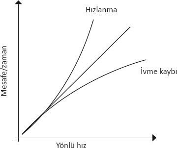
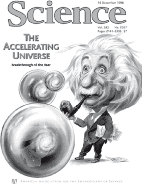
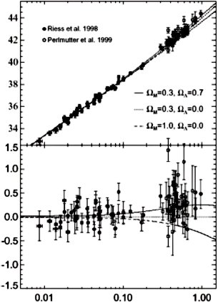

Bugün hayatın kökenini düşünürsek çöpten ibaret olduğunu söyleyebiliriz; hayatın kökeni yerine maddenin kökeni de denebilir pekâlâ.
Charles Darwin, 1863
Michael Turner ve benim 1995'te savunduğumuz şey son derece çizgi dışı bir şeydi. Kuramsal önyargılardan pek öteye gidemeyen dayanak noktalarımızla Evren'in düz olduğu varsayımında bulunmuştuk. (Üç boyutlu bir evrende "düz"ün, iki boyutlu bir krep gibi düz olmayacağını bir kere daha hatırlatayım yeri gelmişken, üç boyutlu bir evrendeki "düz" daha ziyade hepimizin sezgisel olarak gözlerimizin önüne getirebildiği, ışık huzmelerinin düz doğrular halinde yol aldığı üç boyutlu uzaydır. Bir de bu olasılığın karşısındaki olasılığı düşünün, ışık huzmelerinin uzaydaki eğimi izlediği, düz doğrular üzerinde yol almadığı eğimli üç boyutlu uzayları gözümüzde canlandırmak daha zordur.) Sonra da ancak toplam enerjinin yüzde 30'unun, gözlemlere göre galaksiler ve galaksi topluluklarının çevresinde bulunan bir "karanlık madde" biçiminde olması halinde, mevcut kozmolojik verilerin düz bir evrenle tutarlı olduğu çıkarımında bulunmuştuk, fakat bundan da tuhafı şuydu: Çıkarımımıza göre evrendeki toplam enerjinin geri kalan yüzde 70'i bir madde biçiminde değil, daha ziyade boş uzayda bulunuyordu.
Fikrimiz hangi ölçüye vurulursa vurulsun çılgıncaydı. Kozmolojik Sabit'in iddiamızla tutarlı bir değer olabilmesi için, son bölümde tahmin edilen değerin bir şekilde 120 büyüklük kertesi küçültülmesi, yine de kesin sıfır olmaması gerekiyordu. Bu, doğada bilinen fiziksel bir niceliğin en katı biçimde ayarlanması anlamına gelecekti, ama bunu nasıl gerçekleştireceğimize dair en ufak bir fikrimiz bile yoktu.
Düz bir evren kuşkusuna dair çeşitli üniversitelerde verdiğim konferanslarda çoğunlukla tebessümle karşılanmamın, daha fazlasını göremememin nedenlerinden biri budur. Önerimizi ciddiye alan fazla insan yoktu sanırım; Turner ve ben ciddiye alıyor muyduk, ondan da emin değilim. Makalemizle insanları şaşırtmaktaki amacımız, yalnızca bizim değil, dünyanın çeşitli yerlerinde bazı kuramcı meslektaşlarımızın da içine doğmakta olan bir gerçeği açıkça ortaya koymaktı: Evrenimize dair, o zamanlar genel kabul gören "standart" tabloda bir şeyler yanlışmış gibi görünüyordu; bu tabloya göre Genel Görelilik'in bugün düz bir evren için gerektirdiği enerjinin neredeyse tamamının bilinmeyen karanlık maddede bulunduğu varsayılıyordu (bu karışım bir parça baryonla, yani biz Dünyalılar, yıldızlar, görünebilir galaksilerle tatlandırılıyordu).
Bir meslektaşım kısa süre önce, mütevazı önerimizi ortaya atmamızdan sonraki iki yıl içinde makalemize yalnızca birkaç kez atıfta bulunulduğunu, görünüşe bakılırsa atıfta bulunan bu makalelerden biri ya da ikisi dışında hepsini de ya Turner'ın kaleme aldığını ya da benim yazdığımı hatırlattı! Evrenimizin Turner ve benim ileri sürdüğümüz kadar çılgınca olamayacağına inanan yığınlar da evrenimiz kadar şaşırtıcıdır. Biz şöyle diyorduk:
Çelişkilerden sıyrılmanın en basit yolu evrenin düz değil açık (paralel ışık huzmelerinin aldıkları yolu geriye doğru izlediğimizde huzmelerin kıvrılacağı bir evren) olması olasılığıdır. (Tabii ki bunu Kozmik Mikrodalga Geri Plan Işınımı'na dair ölçümlerin, bu seçeneğin elverişli olmadığını açıkça ortaya koymasından önce söylemiştik.) Gelgelelim bu olasılığın da sorunları vardır, gerçi bu konudaki durum açık olmaktan hâlâ çok uzaktır.
Fizik dersi alan bir lise öğrencisi memnuniyetle, kütleçekimin hürplettiğini, yani evrensel düzeyde çekici olduğunu söyleyecektir. Elbette ki bilimdeki birçok şey gibi, doğa bizim hayalgücümüzü çok aştığı için bugün artık ufuklarımızı genişletmemiz gerektiğini biliyoruz. Şu an için, kütleçekimin çekici niteliğinin evrenin genişlemesinin yavaşladığı anlamına geldiğini varsayarsak, bizden belli bir uzaklıkta bulunan bir galaksinin yönlü hızının Büyük Patlama'dan bu yana sabit olduğunu varsayarak evrenin yaşıyla ilgili üst bir sınır elde ederiz. Çünkü, evren ivme yitiriyorsa, galaksi bir zamanlar bizden daha hızlı uzaklaşıyor olacaktır, bu yüzden de bugünkü konumuna gelmesi, hep bugünküyle aynı hızda hareket etmesi halinde gereken zamandan daha az zamanda gerçekleşmiş olacaktır. Maddenin hakimiyetindeki açık bir evrende, evrenin ivme yitirmesi, düz bir evrende olduğundan daha yavaş gerçekleşecektir, bu yüzden de bu koşullardaki evrenin çıkarsanan yaşı, maddenin hakim olduğu düz bir evrenin yaşından daha büyük olacaktır, aynı nedenle evrenin bugün ölçülen genişleme oranı da. Aslında kozmik bir süre zarfında sabit bir genişleme oranı varsayarak tahmin ettiğimiz değere çok daha yakın olacaktır.
Unutmayalım, boş uzayın sıfır olmayan enerjisi, kütleçekimin itkisine benzeyen kozmolojik bir sabit yaratır, bu da evrenin genişlemesinin aslında kozmik bir süre zarfında hızlanması anlamına gelir, bu da demektir ki galaksiler önceden birbirlerinden bugün olduğundan daha yavaş ayrılmışlardır. Bu da şu anlama gelir: Galaksilerin arasındaki mesafenin bugünkü boyutlara ulaşması, genişlemenin sabit olduğu bir evrene kıyasla çok daha uzun sürmüştür. Gerçekten de bugün Hubble Sabiti'yle yapılan bir ölçümde, evrenimizin en büyük olası yaşına (yaklaşık 20 milyar yıl), kozmolojik sabitin değerini bugün evrendeki maddenin yoğunluğuna uygun olarak değiştirmekte serbest olduğumuz varsayılarak, kozmolojik sabitin görünen ve karanlık maddenin ölçülen miktarına uygun olması olasılığı hesaba katılarak ulaşılmıştır.
Gelgelelim en yaşlı yıldızların yaşları, mevcut duyarlılığın sınırında gerçekleştirilmiş gözlemlere dayalı çıkarımlar yapılmasını gerektirir, 1997'de gözlemlerden elde edilen yeni veriler sonucu tahminlerimizi gözden geçirip yaklaşık 2 milyar yıl geri çekmek zorunda kaldık, böylece sonuçta biraz daha genç bir evrene vardık. Böylece ortam biraz daha bulandı, üç kozmolojinin üçü de olabilirmiş gibi görünüyordu yine, birçoğumuz yine tahtanın başına geçtik.
Bu durum 1998 yılında, BOOMERANG deneyinin evrenin düz olduğunu gösterdiği yıl değişti.
Edwin Hubble'ın evrenin genişleme hızını ölçmesini izleyen 70 yıl içinde, astronomlar bu değeri bulabilmek için hep daha çok çalıştılar. 1990'larda, nihayet "standart bir mum", yani gözlemcilerin, içkin pırıltısını bağımsız olarak belirleyebilecekleri, böylece belirgin pırıltısını ölçtüklerinde uzaklığını çıkarsayabilecekleri bir nesne buldular. Standart mum güvenilir görünüyordu, uzayın ve zamanın derinliklerinde gözlenebilen bir nesneydi.
Kısa süre önce de Tip 1a süpernova denilen belli tipteki bir patlayan yıldızın hem parlaklık hem kalıcılık gösterdiği anlaşıldı. Bir Tip 1a süpernovasının ne kadar uzun süre parlak kalacağının hesaplanması, ilk kez evrenin genişlemesinden kaynaklanan zaman genleşmesi etkilerinin dikkate alınmasını gerektirdi, bu da böyle bir süpernovanın ölçülen ömrünün aslında, bulunduğu ortamdaki asıl ömründen daha uzun olduğu anlamına gelir. Yine de süpernovanın mutlak parlaklığını çıkarsayabilir, belirgin parlaklığını teleskoplarla ölçebilir ve nihayetinde süpernovanın patladığı galaksinin uzaklığını belirleyebiliriz. Aynı zamanda galaksinin kırmızıya kaymasının ölçülmesi, yönlü hızını belirleyebilmemizi de sağlamıştı. Bu ikisinin birleştirilmesi de evrenin genişleme hızını artan bir kesinlikle ölçmemizi mümkün kılar.
Süpernovalar bu kadar parlak oldukları için, Hubble sabitini ölçmemizi mümkün kılacak muhteşem bir araç olmakla kalmaz, gözlemcilerin geriye doğru, evrenin toplam yaşının önemli bir kesitini oluşturan uzaklıklara bakmalarını da mümkün kılar.
Bu da gözlemcilerin çok daha heyecan verici bir muamma olarak gördükleri yeni ve heyecan verici bir imkanın kapısını aralar: Hubble Sabiti'nin kozmik zaman içinde nasıl değiştiğini ölçmek.
Bir sabitin nasıl değiştiğini ölçmek kulağa bir oksimoron gibi geliyor. Biz insanlar, en azından kozmik bir ölçekte bu kadar kısa hayatlar yaşıyor olmasak öyle olurdu.
İnsanın zaman ölçeğinde evrenin genişleme hızı gerçekten de sabittir. Gelgelelim biraz önce anlattığım üzere, evrenin genişleme hızı kütleçekim etkileri yüzünden kozmik zaman içinde değişecektir.
Astronomlar şöyle bir mantık yürütüyorlardı: Uzaklarda, görünebilir evrenin en uzak köşelerinde bulunan süpernovaların yönlü hızını ve uzaklığını ölçebilirlerse evrenin genişlemesinin yavaşlama hızını ölçebilirlerdi. (Çünkü herkes evrenin akla uygun davrandığını, evrendeki baskın kütleçekim kuvvetinin de çekici bir kuvvet olduğunu varsayıyordu!) Bunun da evrenin açık mı, kapalı mı yoksa düz mü olduğunu ortaya koyacağını umuyorlardı, çünkü zamanın bir fonksiyonu olarak yavaşlama hızı her geometri için farklıdır.
1996'da altı haftamı Lawrence Berkeley Laboratuvarı'nda kozmolojiyle ilgili konferanslar verip oradaki meslektaşlarımla çeşitli bilimsel projeleri tartışarak geçirdim. Boş uzayda enerji olabileceği yolundaki iddiamız hakkında da bir konuşma yapmıştım, o sıralar uzaktaki süpernovaların belirlenmesi konusunda çalışmalar yapan genç bir fizikçi, Saul Perlmutter bu konuşmanın ardından yanıma gelip "Yanıldığınızı kanıtlayacağız!" demişti.
Saul, düz bir evreni öngören varsayımımıza göre enerjinin yüzde 70'inin boş uzayda bulunmasından bahsediyordu. Hatırlayalım: Böyle bir enerji kozmolojik bir sabitin ortaya çıkmasına neden olur, bu kozmolojik sabit uzayın her yerinde var olacak itici bir kuvvet yaratır, bu kuvvet de evrenin genişlemesine hakim olur ve genişlemenin yavaşlamasına değil, hızlanmasına yol açar.
Betimlediğim gibi, evrenin genişlemesi kozmik zaman içinde hızlanıyorsa, bu durumda bugün evrenin, genişlemenin yavaşlaması halinde çıkarsayacağımızdan daha yaşlı olması gerekir. Bu da belli bir kırmızıya kayma söz konusu olduğunda galaksilerin geçmişinde, bu kırmızıya kaymanın olmaması halinde olacağından daha uzak bir noktaya bakacağımız anlamına gelir. Galaksiler daha uzun bir süredir bizden uzaklaşıyorlarsa bu da demektir ki onlardan gelen ışık uzaklaşmamaları halinde olacağından çok daha uzaktan gelmektedir. Bu durumda ölçülen bir kırmızıya kaymada, galaksilerdeki süpernovalar, ışığın daha yakın bir mesafeden gelmesi halinde olacağından çok daha sönük görünecektir. Şematik olarak, yönlü hıza karşılık uzaklık ölçüldüğünde, nispeten yakınlardaki galaksileri ifade eden eğrinin eğimi, evrenin bugünkü genişleme hızını belirlememizi sağlayacak, uzaktaki süpernovalar için eğimin yukarıya doğru mu yoksa aşağıya doğru mu kıvrıldığı ise evrenin genişlemesinin kozmik zaman içinde hızlandığını mı yoksa yavaşladığını mı söyleyecektir:

Karşılaşmamızdan iki yıl sonra Süpernova Kozmoloji projesi denilen uluslararası bir ekipte yer alan Saul ile meslektaşları, gerçekten de bizim yanılıyor olduğumuzu düşündüren ilk verilere dayanarak bir makale yayınladılar. (Aslına bakarsanız benim ve Turner'ın yanıldığımızı savunmamışlardı, çünkü gözlemcilerin çoğu gibi onlar da önerimize pek itibar etmemişlerdi.) Onların verileri, uzaklığa karşılık kırmızıya kayma şemasının aşağıya doğru eğrildiğini, dolayısıyla boş uzayın enerjisine getirilebilecek bir üst sınırın, bugün toplam enerjiye ciddi bir katkıda bulunması için gereken miktarın haydi haydi altında olması gerektiğini düşündürüyordu.
Ne var ki genellikle vuku bulduğu üzere, gelen ilk veriler, verilerin tamamını temsil etmeyebilir; ya istatiksel olarak şansınız yaver gitmez ya da beklenmedik sistematik hatalar verileri etkileyebilir, elinizde daha büyük bir örneklem oluncaya kadar da bu hatalar kendilerini göstermeyebilir. Süpenova Kozmoloji Projesi'nin yayınladığı verilerde de böyle bir durum söz konusu olmuştu, o yüzden de vardıkları sonuçlar hatalıydı.
Başka bir uluslararası araştırma projesi, Avustralya'da Stromlo Dağı Gözlemevi'nde Brian Schmidt başkanlığındaki High-Z Süpernova Araştırma Ekibi de aynı amaçla bir program yürütüyordu ve farklı sonuçlar elde etmeye başlamışlardı. Brian kısa süre önce bana şunu anlattı: High-Z Süpernova Araştırması'ndan evrenin ivmelendiği ve ciddi bir boşluk enerjisine sahip olduğu yönünde ilk önemli sonuçları aldıklarında bir dergi yanılıyor olmaları gerektiğini, çünkü Süpernova Kozmoloji projesinin evrenin gerçekten de düz ve maddenin hakimiyetinde olduğunu çoktan belirlediğini bildirmiş.
Bu iki grup arasındaki rekabetin ayrıntılı tarihi hiç kuşkusuz birçok kez tekrarlanacaktır, hele ki kuşkusuz kazanacakları Nobel Ödülü'nü paylaşmalarından sonra. Ama kimin ilk olduğu konusundaki kaygıların yeri burası değil. 1998 başına gelindiğinde Schmidt'in grubunun evrenin ivmeleniyormuş gibi göründüğünü gösteren bir makale yayınladığını belirtmemiz yeterli olur. Bundan yaklaşık altı ay sonra Perlmutter'in grubu da benzer sonuçlara vardıklarını duyurdu ve ulaştıkları ilk sonuçların aslında hatalı olduğunu teslim eden, High-Z Süpernova ekibinin sonuçlarını doğrulayan, evrene boş uzayın enerjisinin, ya da bugünkü yaygın deyişle karanlık enerjinin hakim olduğu görüşüne daha fazla itibar kazandıran bir makale yayınladı.
Bu sonuçların (evrene dair kabul gören tablonun baştan aşağı yenilenmesini gerektiriyor olsalar da) camiada benimsenme hızı, bilim sosyolojisi açısından ilginç bir araştırma konusudur. Sonuçlar neredeyse bir gecede genel bir kabul gördü, her ne kadar Carl Sagan'ın üstüne basa basa söylediği gibi "olağandışı iddialar, olağandışı kanıtlar gerektirse" de. Olağandışı bir iddia varsa o da buydu kuşkusuz.
Aralık 1998'de Science Magazine, evrenin ivmelendiğinin keşfedilmesini yılın bilimsel atılımı olarak ilan edip bir de Einstein'ı hayret içinde gösteren bir çizimle dikkat çekici bir kapakla bunu sunduğunda şok oldum:

Şok olmamın nedeni, bu sonucun derginin kapağına taşınmaya değer bir sonuç olmadığını düşünmem değildi. Tam tersine. Doğruysa eğer, bu keşif zamanımızın en önemli astronomik keşiflerinden biriydi, ama o zamanki veriler bu sonucu kuvvetle işaret etmekten öteye gidemiyordu. Evren tablomuzda öyle bir değişiklik yapılmasını gerektiriyorlardı ki herkes kozmolojik sabit trenine atlamadan önce, ekiplerin gözlediği etkilere yol açabilecek etkilerin kesinlikle devre dışı bırakıldığından yüzde yüz emin olmamız gerektiği kanısındaydım. O tarihte en azından bir gazeteciye söylediğim gibi: "Kozmolojik sabite ilk kez, gözlemciler keşfettiklerini iddia ettiklerinde inanmadım."
Bu olasılığı şu ya da bu biçimde herhalde on yıldır savunmuş olduğum düşünülürse, verdiğim biraz nüktedan tepki tuhaf gelebilir. Bir kuramcı olarak spekülasyonun, özellikle deneyler için yeni yollar açıyorsa iyi olduğunu düşünürüm. Ne var ki, kendi alanım olan parçacık fiziğinde birçok yeni ve heyecan verici, ama somutluktan uzak iddianın hatalı olduğunun anlaşıldığı bir dönemde bilimsel olgunluğa ulaştığımdan olacak, gerçek verileri incelerken olabildiğince tutucu olmak gerektiğine inanırım. Doğada beşinci bir kuvvetin keşfedilmesinden tutun, yeni temel parçacıkların keşfine, evrenimizin tamamının döndüğü yönündeki gözleme kadar, böyle iddialar bir curcunayla gelip geçmişlerdir.
O zamanlar evrenin ivmelendiğinin keşfedildiği iddiasıyla ilgili olarak en fazla kaygı yaratan şey, uzaktaki süpernovaların, ivmelenen bir genişleme yüzünden değil, ya (a) daha sönük oldukları için ya da (b) erken zamanlarda mevcut galaksiler arası ya da galaktik tozların onları kısmen gölgelemesi yüzünden olmaları beklendiğinden daha sönük görünmesi olasılığıydı.
Sonraki on yıl içinde, ivmelenme yönündeki kanıtların ezici miktarda, neredeyse sorguya yer bırakmayacak kadar fazla olduğu anlaşıldı. Önce, başka birçok süpernovada yüksek kırmızıya kayma ölçüldü. Bunlardan yola çıkılarak, ilk yayınlardan bir yıl sonra gerçekleştirilen, iki grubun izlediği süpernovalara ilişkin birleşik bir analizde şu manzara ortaya çıktı:

Gözlemciler, göze kılavuzluk etmesi, uzaklığa karşılık kırmızıya kayma eğrisinin yukarıya mı yoksa aşağıya doğru mu eğrildiğini görmenize yardımcı olması için, şemanın üst kısmına sol alttan sağ üst köşeye uzanan, yakınlardaki süpernovaları temsil eden verileri izleyen bir doğru çizmişlerdir. Bu doğrunun eğimi, evrenin bugünkü genişleme hızını vermektedir. Sonra, şeklin alttaki yarısında, yine göze yardımcı olması için aynı doğruyu bu kez yatay olarak çizmişlerdir. 1998'de beklendiği üzere evren ivme yitiriyor olsaydı 1'e yakın bir kırmızıya kayması (z) olan uzaktaki süpernovalar bu düz doğrunun altında kalırdı. Ama gördüğünüz üzere bunların çoğu doğrunun üstünde kalmaktadır. Bunun nedeni şu ikisinden biri olabilir:
1) Veriler yanlıştır.
2) Evrenin genişlemesi ivmelenmektedir.
Şimdilik ikinci seçeneği kabul eder, "Gözlenen bu ivmelenmeyi yaratabilmek için boş uzaya ne kadar enerji eklememiz gerekir?" diye sorarsak bulduğumuz yanıt çok şaşırtıcı olacaktır. Elde edilen en iyi verileri temsil eden kesiksiz eğri, enerjinin yüzde 30'unun maddede, yüzde 70'inin boş uzayda olduğu düz bir evrene denk düşmektedir. Bu, gerekli kütlenin yalnızca yüzde 30'unun galaksiler ve galaksi topluluklarının içinde ve çevresinde bulunduğu gerçeğiyle tutarlı düz bir evren yaratmak için gerekli miktardır. Gözle görülür bir uyum yakalanmıştır.
Yine de evrenin yüzde 99'unun görünmez olduğu iddiası olağandışı bir iddia kategorisine girdiğinden, yukarıda bahsettiğim iki olasılıktan ilkinin, yani verilerin yanlış olması olasılığının üzerinde ciddi ciddi durmamız gerekiyor. Bu verileri izleyen on yıl içinde kozmoloji alanında elde edilen verilerin geri kalanı, baskın enerjinin boş uzayda bulunduğu, görebildiğimiz her şeyin toplam enerjinin yüzde 1'inden daha azını oluşturduğu, geri kalan her şeyin henüz bilinmeyen yeni bir tür temel parçacıklardan oluştuğu düz bir evren tablosuyla, bu çılgın tabloyla genel uyumu pekiştirmeye devam etti.
Öncelikle yeni uydular sayesinde, eski yıldızlardaki element bolluğuyla ilgili bilgiler elde ederken, yıldızların evrimiyle ilgili yeni veriler daha iyileşti. Meslektaşım Chaboyer ve ben 2005'te, bu verilerin kullanılması sayesinde, evrenin yaşıyla ilgili tahminlerdeki belirsizliklerin azaltıldığını, evrenin ömrünü 11 milyar yıldan kısa olarak veren tahminlerin dışarıda bırakılabileceğini kesin olarak gösterdik. Evrenin yaşının 11 milyar yıldan uzun olması, boş uzayda enerji içermeyen bir evrenle tutarlı değildir. Yine, bu enerjinin bir kozmolojik sabitten kaynaklanıp kaynaklanmadığından emin olmadığımız için, galaksilere hakim olan "karanlık madde"nin adına benzer bir biçimde, buna da basitçe "karanlık enerji" diyoruz.
Galaksimizin yaşıyla ilgili tahminler de 2006'da Kozmik Mikrodalga Geri Plan Işınımı'nda WMAP uydusu sayesinde yeni bir kesinliğe varan ölçümlerin, gözlemcilerin Büyük Patlama'dan bu yana geçen zamanı kesin olarak ölçmesini sağlamasıyla son derece iyileşti. Artık evrenimizin yaşının dört önemli rakamını biliyoruz. 13,72 milyar yaşında!
Ben hayattayken böyle bir kesinliğe ulaşabileceğimiz aklımın ucundan bile geçmezdi. Ama artık ulaştık, o yüzden de bugün ölçülen hızda genişleyen bir evrenin karanlık enerji olmaksızın bu kadar yaşlı olmasının mümkün olmadığını doğrulayabiliriz. Aslında karanlık enerji, kozmolojik bir sabit gibi davranmaktadır. Başka bir deyişle zaman içinde sabit kalan enerjidir.
Bundan sonraki bilimsel atılımda, gözlemciler maddenin kozmik zaman içinde galaksiler biçiminde nasıl bir araya geldiğini ölçmeyi başardılar. Bu sonuç evrenin genişleme hızına dayanır, galaksileri bir araya getiren çekici kuvvetin maddeyi birbirinden ayıran kozmik genişlemeyle yarışması gerekmiştir. Boş uzayın enerjisi ne kadar fazlaysa, evrenin enerjisine o kadar kısa sürede hakim olur, artan genişleme hızı da o kadar kısa sürede yavaşlar ve nihayetinde maddenin çok büyük ölçeklerde kütleçekim etkisiyle çarpışmasını durdurur.
Dolayısıyla gözlemciler, kütleçekime bağlı toplaşmayı ölçerek evrende gözlenen geniş ölçekli yapıyla tutarlı yegane düz evrenin, enerjinin yaklaşık yüzde 70'inin karanlık enerji olduğu bir evren olduğunu ve karanlık enerjinin az çok kozmolojik bir sabit gibi davrandığını bir kere daha doğrulamışlardır.
Evrenin genişleme tarihine ilişkin bu dolaylı araştırmalardan bağımsız olarak, süpernova gözlemcileri, uzak mesafelerde tozun artmasının süpernovaların daha sönük görünmesine yol açması olasılığı da dahil, analizlerinde sistematik hatalara yol açması olası durumlarla ilgili kapsamlı testler yapmışlar ve bu olasılıkları teker teker ortadan kaldırmışlardır. Gözlemcilerin yaptığı en önemli testlerden biri de zamanda geriye dönük bir araştırma yapılmasını gerektiriyordu.
Evrenin tarihinin ilk dönemlerinde, bugün gözlenebilir olan bölgemiz boyut olarak daha küçüktü ve maddenin yoğunluğu da daha fazlaydı. Ne var ki boş uzaydaki enerji yoğunluğu, kozmolojik bir sabitten ya da ona benzer bir şeyden kaynaklanıyorsa zaman içinde sabit kalır. Dolayısıyla evren bugünkü boyutlarının yarısı kadarken maddenin enerji yoğunluğunun, boş uzaydaki enerji yoğunluğunu aşması gerekir; bu durumda genişlemeyi etkileyen baskın kütleçekim kuvveti maddeden kaynaklanıyor, evrenin genişleme ivmesi de azalıyor olacaktır.
Klasik mekanikte bir sistemin yavaşlamaktan çıkıp hızlanmaya başladığı noktanın bir adı vardır: "Pislik."* 2003'te, çalıştığım üniversitede, kozmolojinin geleceğini incelemek üzere bir konferans düzenlemiş, daha önce bana sunacağı heyecan verici bir şey olduğunu söyleyen, High-Z Süpernova araştırma ekibinde yer alan Adam Reiss'ı da konferansa davet etmiştim. Gerçekten de heyecan verici bir şey sundu. Ertesi gün New York Times bu toplantının haberini Adam'ın bir fotoğrafıyla birlikte "Kozmik Pislik (Jerk) Keşfedildi" başlığıyla verdi. O fotoğrafı sakladım, eğlenmek için arada çıkarır bakarım.
Evrenin genişleme tarihinin, ivmenin azaldığı bir dönemden arttığı bir döneme geçildiğini gösteren ayrıntılı bir haritasının çıkarılması gözlemlerin ileri sürdüğü, karanlık enerjinin varlığının aslında doğru olduğu iddiasına ciddi bir ağırlık kazandırdı. Bugün elimizde mevcut diğer bütün kanıtlarla birlikte, bu tabloya bakarak bir şekilde kozmik bir akıntıya kürek çektiğimizi düşünmek çok zordur. Beğenin beğenmeyin, öyle görünüyor ki karanlık enerji hep bizimle olacaktır, yani en azından bir şekilde değişene kadar yerli yerinde duracaktır.
Karanlık enerjinin kökeni ve doğası hiç kuşkusuz bugün temel fiziğin en büyük muammasıdır. Nereden kaynaklandığına ya da neden sahip olduğu değerde olduğuna dair temel bir anlayıştan yoksunuz. Evrenin genişlemesine neden nispeten yakın bir dönemde, yalnızca son 5 milyar yıl içinde hakim olmaya başladığına dair de bir fikrimiz yok bu yüzden. Karanlık enerjinin niteliğinin evrenin kökeniyle temel bir bağı olduğundan kuşkulanmamız gayet doğal. Öyle sanıyoruz ki geleceğimizi karanlık enerji belirleyecek.